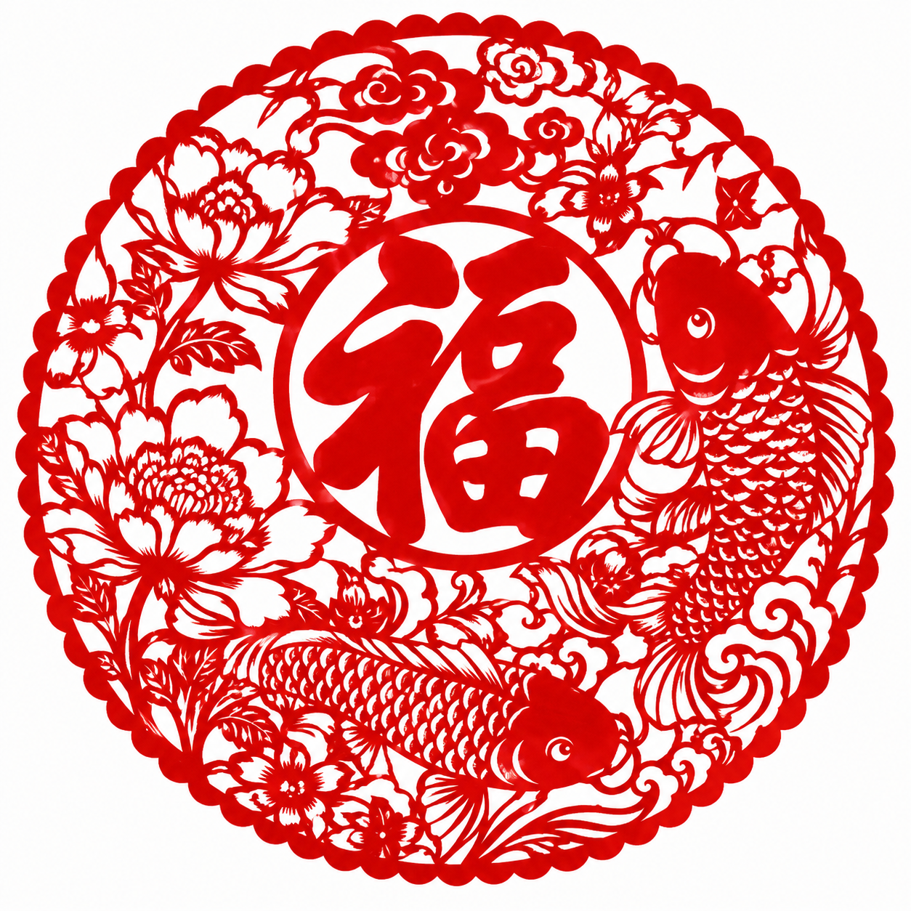

传承千年技艺 · 品味东方美学
走进非物质文化遗产，感受中华文明的深厚底蕴

一纸一剪，镂空成画。剪纸是中国最古老的民间艺术之一，以刀剪为笔、红纸为墨，在方寸之间雕琢出万千世界。
以针为笔，以线为墨。苏绣、湘绣、粤绣、蜀绣四大名绣各具风韵，在一针一线间绣出东方美学的极致细腻。
一盏清茶，千年风雅。中国茶道融合了儒释道三家思想，在沏茶、赏茶、闻茶、饮茶中体悟「和静怡真」的境界。
岁时节令，礼乐传家。春节、端午、中秋等传统节日承载着中华民族的文化记忆与情感纽带。